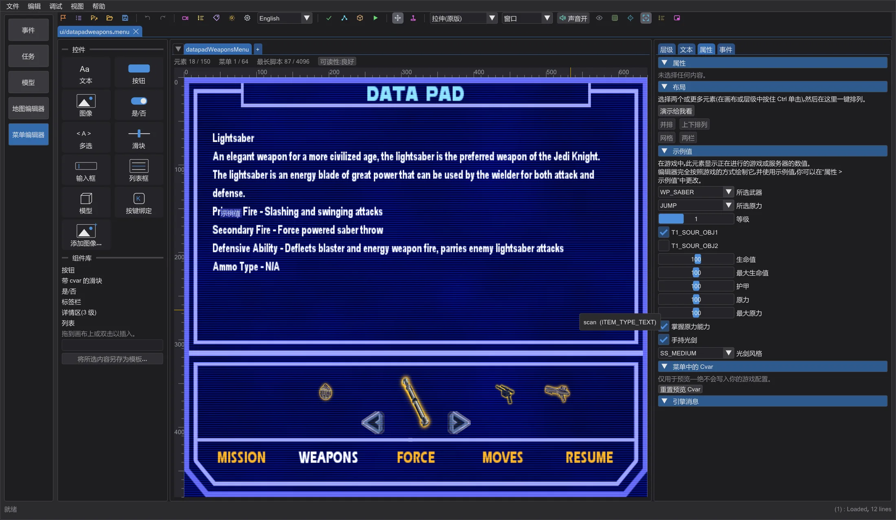
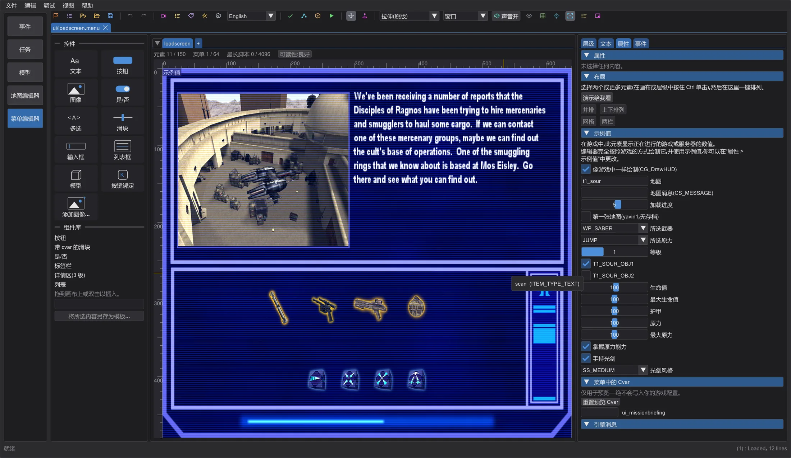
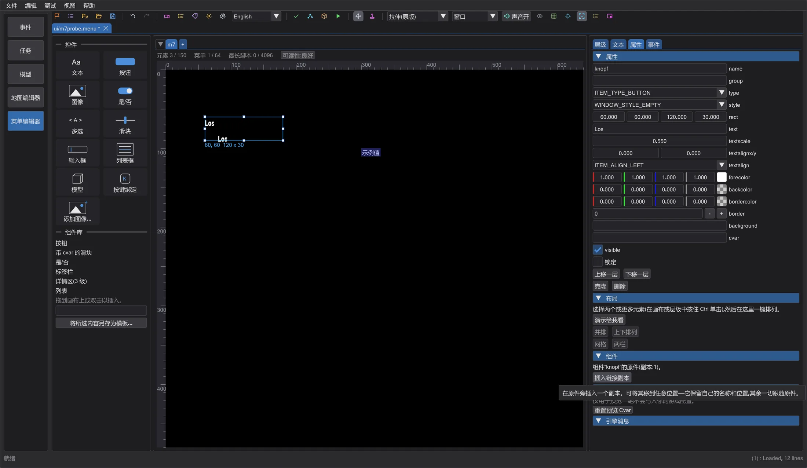
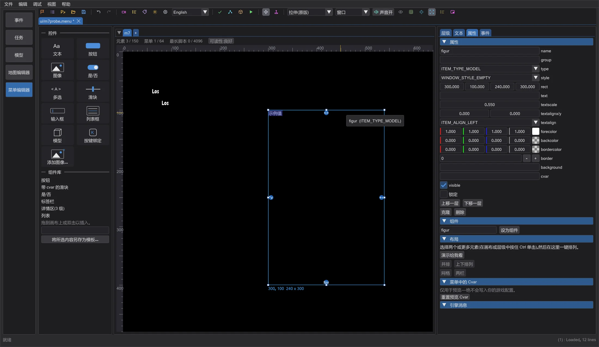

菜单编辑器:游戏数值、在游戏中重新加载、组件
所有显示正在进行的游戏数值的元素,现在都像游戏中一样绘制,并带有可修改的示例值;按键绑定显示真实按键;加载画面和连接画面与游戏中一致;用“在游戏中测试”启动的游戏会在保存后重新加载菜单;组件让副本保持同步;模型有用于旋转、距离和视野的手柄。
带游戏数值的元素#
有些元素(ownerdraw)由游戏代码自己绘制:多人游戏玩家菜单中的原力星和原力点数、服务器来源和筛选、机器人名称、显卡驱动页面(GL_VENDOR 和扩展——编辑器从你真实的 OpenGL 驱动读取)、带目标、武器和原力的数据板、Movie Duels 的 Pazaak 牌桌和商店等。编辑器现在完全按引擎的方式绘制它们。凡是游戏从正在进行的游戏或服务器获取数值的地方,编辑器使用示例值,并在元素左上角标注 示例值(仅在编辑时)。在 属性 > 示例值 中修改示例:所选武器和原力及其等级、目标、生命、原力和弹药,多人游戏中还有服务器设置(g_jediVmerc、g_forceBasedTeams、最高原力等级、刷新服务器)。游戏自己画成空白的元素(例如语音聊天条目)保持空白;只在对局中才填充的列表(玩家列表)显示示例名称。

Jedi Outcast 和 Movie Duels 绘制自己的数据板:Jedi Outcast HUD 的生命、护甲、原力和弹药圆环,武器、物品和原力后面带尖角的图标条;Movie Duels 中图标更小、两侧各一个相邻图标,并有它的 25 种原力和自己的文字。预览跟随已加载数据的游戏。
按键绑定:控制菜单中的按键绑定元素现在显示游戏默认绑定的按键(来自游戏的默认配置,例如 default.cfg 或 mpdefault.cfg),并使用游戏的按键名称,而不是 ???。游戏未列出的命令与游戏中一样仍显示 ???。
加载画面与连接画面#

单人游戏的 loadscreen 菜单和多人游戏的 Connect 菜单只是游戏所显示内容的一部分:加载时,游戏会在其上绘制关卡截图、存档中的武器和原力图标、加载条和地图名称;连接时,会写出地图、服务器和连接状态。编辑器像游戏一样绘制这一切。在 属性 > 示例值 中可选择地图、地图消息、加载进度以及特殊的第一张地图(带引言的黑屏),多人游戏中可选择服务器、地图、连接状态、数据包和消息。开关 像游戏中一样绘制(CG_DrawHUD) 则只显示菜单本身。
在运行中的游戏里重新加载#
当能在运行中的游戏里重新加载时(OpenJK 和 Movie Duels),在游戏中测试 现在会把你的菜单作为松散文件放入它自己的测试文件夹(绝不放入游戏文件夹)。Jedi Academy 和 Jedi Outcast 的原版程序也认识 ui_load,但不接受发给后台窗口的按键——对它们仍使用 .pk3 并重新启动。只要该游戏在运行,每次保存都会重新写入文件并向游戏发出 ui_load:游戏关闭菜单、重新读取菜单集并打开最后打开的菜单——无需重启。编辑器只向它自己启动的游戏窗口发送按键。
组件#

选择一个元素,在属性中单击 设为组件:它会成为组件的原件。插入链接副本 会在旁边插入一个链接副本。可以把副本移到任意位置——它保留自己的名称和位置;其余一切跟随原件:修改原件的文字、颜色或大小,每个副本都会随之改变(一步撤销)。在 .menu 文件中,原件和副本仍是普通的 itemDef,前面各有一行注释(// jkstudio:komponente <name>、// jkstudio:instanz <name>);游戏像读取其他元素一样读取它们。
调整模型#

选中的模型元素左上角有四个大按钮,位于缩放手柄旁边(元素太小时位于其上方)。左右拖动第一个旋转模型(model_angle:180 面向观看者,0 背向),上下拖动第二个使模型变远或变近,拖动第三个升高或降低模型,左右拖动第四个改变视野(model_fovx、model_fovy)。新模型从正面完整可见,数值来自游戏自身的菜单。重要:model_g2anim 只有在文件中位于 asset_model 之前时才会播放(isCharacter 位置不限);否则游戏显示 T 姿势,预览也一样。
新项目 可以以多人游戏格式开始:在 新建项目 之前选择 单人游戏 或 多人游戏。
已在游戏中核对#
整页菜单模板已在 Movie Duels、原版 Jedi Academy 和 Jedi Outcast 中截图并与预览比较。滑块采用各游戏的尺寸:Jedi Academy 和 Jedi Outcast 单人为 128 宽,Movie Duels 和多人为 96。Jedi Outcast 把 ^ 后面的每个字符都当作颜色(^B 是绿色),并在文字宽度中计入颜色代码——预览也是如此,因此居中和右对齐的文字位置与游戏一致。